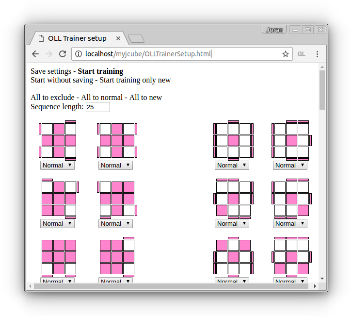
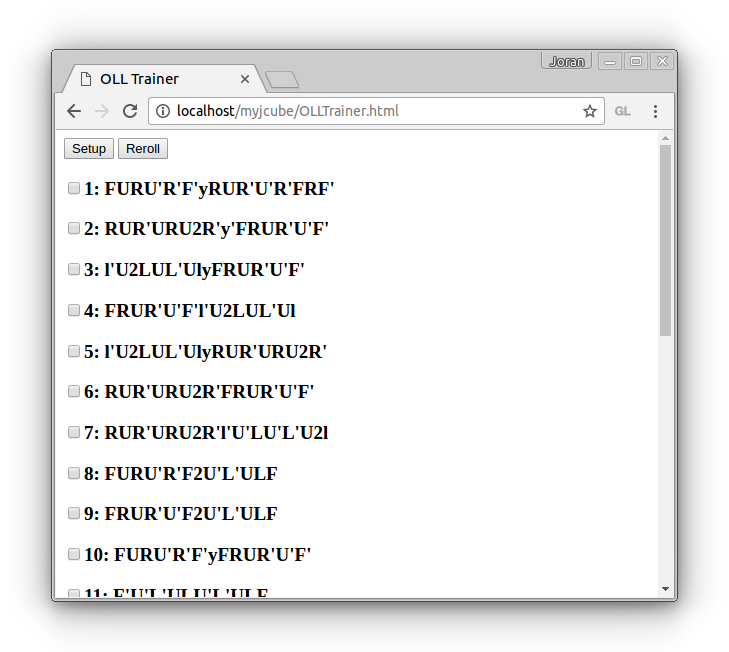

Liens vers l'OLL Trainer
Setup
Voici à quoi ressemble l'écran de setup:

Pour chaque cas on peut choisir une fréquence d'utilisation à l'aide de la combo box se trouvant en dessous.
- Exclude: le cas est ignoré et n'apparaîtra donc jamais.
- Normal: le cas n'aura pas de priorité particulière. (à utiliser pour les cas que l'on connait déjà)
- New: le cas sortira presque forcément à chaque session d'entraînement. (à utiliser pour les cas que l'on est en train d'apprendre)
Sequence length: permet de régler le nombre de cas qui seront soumis lors d'un entraînement. Comme une configuration n'est soumise qu'une seule fois par session au maximum, il se peut que le nombre de cas effectif soit inférieur au nombre entré ici.
Si le cas n'est pas tourné comme vous avez l'habitude pour certains cas, vous pouvez lui appliquer une rotation… Pour faire cela:
- Double cliquer sur un cas
- Utiliser les boutons «rotate»
- Appuyer sur «close»
À propos de la sauvegarde… Les paramètres sont enregistrés automatiquement au «start training». La sauvegarde utilise les cookies.
OLL Trainer
Chaque ligne correspond à un cas… Effectuez la formule de mélange, puis résolvez la face jaune. Ensuite cochez la check box pour vous souvenir que vous avez résolu le cas (et cela prévient le système que vous avez travaillé le cas en question
L'historique de résolution est enregistré en permanence (cf. section suivante).
Comment les cas sont choisis
Voici les règles qui sont appliquées…
- Un cas ne peut apparaître qu'une seule fois lors d'une même session
- Les cas taggés new sont traités en priorité
- Les cas soumis il y a le plus longtemps sont pris en priorité